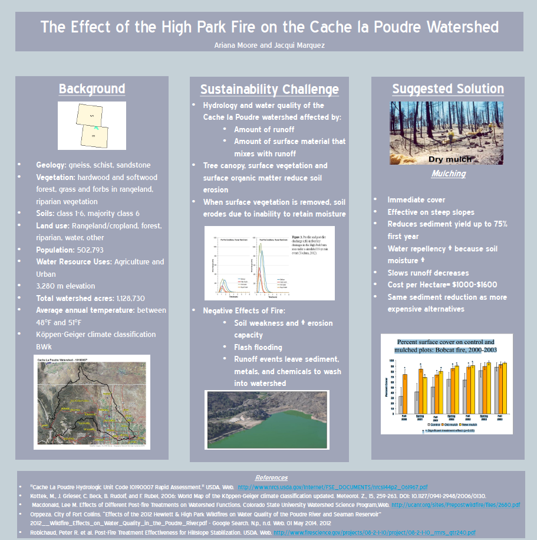

Previous projects and current platforms of working projects.
A Review of Water Quality Change due to Sediment in the Cache la
Poudre Watershed
A review of survey literature and data for the construction of an
accurate depiction of overally water quality changes due to
sediment accumulation from erosion impacts within one of the
primary water source watersheds for the front range area.
Biofuels on the Landscape-
Graduate project by where I acted as a research assistant as part
of a Fellowship provided by the Sustainble BioEnergy Department at
Colorado State University and The Natural Resource Ecology
Laboratory.

Effect of the High Park Fire on the Cache la Poudre Watershed
A quantatative review of soil changes and ecological impacts to
the Cache La Poudre Watershed. From the High Park Fire.
Scenario Planning based on the Cache la Poudre Watershed
A furture forsight analysis on the development of the Cache la
poudre Watershed with economical growth, and population increase
effects. Reviews 4 future scenarios.